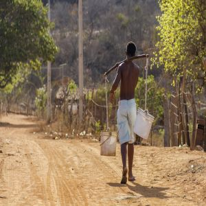
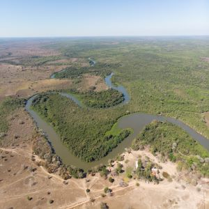
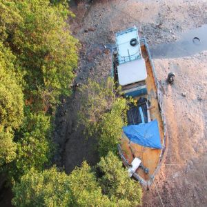
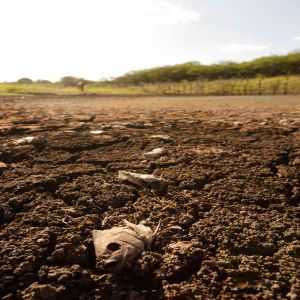

Water & Sanitation
Water and Sanitation has been a major issue in Brazil and is one of the critical areas for the U.N. Sustainability goals. A lack of access to clean drinking water and running water has been a significant issue. Unsatisfactory disposal of trash and waste has led to polluted water, causing health issues and vector-borne diseases from mosquitoes. The hardest hit communities are the favela's.
The buildings in favelas lack structure and access to running water. People living in the favelas accumulate rain water in large tanks or siphoning from rivers. Due to the favelas lack of plumbing, sewage flows down channels into homes and rivers. There is no sanitation standard. When water isn’t available children and parents have to walk great distances to secure water. With a lack of access to clean and safe drinking water compound with health issues, it reduces the amount they can work and learn. This gives little chance of poor families getting out of poverty.

Climate change has been one of the most significant contributing factors to the water crisis in Brazil. While Brazil has one of the largest freshwater resources on the planet, they are rapidly losing surface water due to droughts. Prolonged dry periods have increased over the past decade and are currently experiencing the worst drought in almost a century. The Parana River, which serves as a vital waterway to the inland cities, has dropped to its lowest levels. Droughts can be severely detrimental to the favelas, which depend on rainwater to drink, cook, and bathe. Droughts also mean crop losses, increased fire risks in the Amazon, electricity loss, and water scarcity across the country.
Access to clean drinking water is not a luxury, it is a human right, and needs to be treated as such. Climate change is an issue that affects us all and should be taken seriously. You can get involved by volunteering your time, donating money to help the Brazilian Water Crisis, or by getting educated and spreading the word. We all need to do our part!




